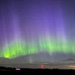
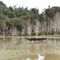
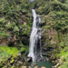
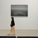

<美國亞利桑那州-下羚羊谷>
曾柏翔│車電人工智慧處
長年受到暴洪與風的侵蝕，才逐漸形成如地下迷宮般的峽谷。流線型的岩壁在光線灑落下，呈現出柔和卻震撼的層次與紋理，讓人有種被大自然輕輕包覆的平靜感。照片中的構圖，也讓洞口透出的光線像是地平線升起的日出。
<漫步在Salzburg的旅人>
黃皓暄│企業產品電源供應設計處 \ 直流電源供應設計部
Salzburg是音樂神童莫札特的故鄉，接觸音樂超過十年的我能夠帶著樂器踏上這片土地，好好的感受並記錄眼前的美景，一切非常滿足～
<白雪點綴的Hallstatt>
黃皓暄│企業產品電源供應設計處 \ 直流電源供應設計部
Hallstatt擁有近7000年歷史與世界最古老鹽礦，於1997年被列為世界文化遺產。四月份的北阿爾卑斯山脈，還有著白雪點綴在山頭，非常的靜謐。
<孤燈>
林彥廷│機構技術處 \ 關鍵組件部
染紅的天空下，街燈獨自生輝。
<夕陽>
吳柏欣│車用品質管理處 \ 設計品保部
夕陽剛好落下，城市也慢慢安靜了。
<大武崙漁港日出>
連柏柔│企業產品硬體工程一處
第一次追大武崙日出，近五點到達，現場已架設十多支腳架蓄勢待發，雖然最後沒有等到理想的日出大景，但眼前的大武崙風光依然令人心曠神怡。
<基隆嶼>
連柏柔│企業產品硬體工程一處
在日出雲彩變幻下，拍到這張看起來像是打了Spotlight的基隆嶼！
<computex2026>
黃名榕│數據中心系統開發業務本部 \ 主件策略採購部
在Computex中百花爭艷，收穫很多也大開眼界

<Aurora女神>
黃名榕│數據中心系統開發業務本部 \ 主件策略採購部
在無預期的情況下看到了極光，十分幸運，照片中的紫光其實肉眼是看不見的，看到的當下真的被大自然的光彩震懾住

<依山傍水>
簡志銘│業務處 \ 客戶服務部
依山傍水，背靠青巒，面臨清流，天地之間自成一方寧靜天地。

<杉林溪瀑布>
許聖芳│歐美第一設計品保處 \ TW DQA部
開了遙遠的路途，就為了一睹這自然美景!
<綠意中的優雅訪客>
楊子慧│機構技術處 \ 聲學音響結構部
陽光穿過層層綠葉，一隻優雅的蝴蝶靜靜停駐其間。黑白相間的翅膀如水墨畫般細膩，翅尖點綴著鮮紅色斑紋，在翠綠背景映襯下格外醒目。牠展翅停留的瞬間，彷彿將自然的靜謐與生命的活力凝結成一幅畫。

<花蓮美術館>
洪秉誠│企業產品硬體工程一處 \ 系統設計部
館外大雨滂沱，館內海面靜謐。在畫作前與這場雨不期而遇，心緒竟比窗外的雨勢更深沉。
<六甲有馬空中纜車>
歐怡伶│系統應用研發處 \ 系統應用一部
搭上纜車俯瞰六甲山壯麗景色，沿途風光如畫，令人陶醉！
{kind=link}
{kind=link}
{kind=link}
{kind=link}
{kind=link}
{kind=link}
{kind=link}
{kind=link}
{kind=link}
{kind=link}
{kind=link}
{kind=link}
{kind=link}
{kind=link}